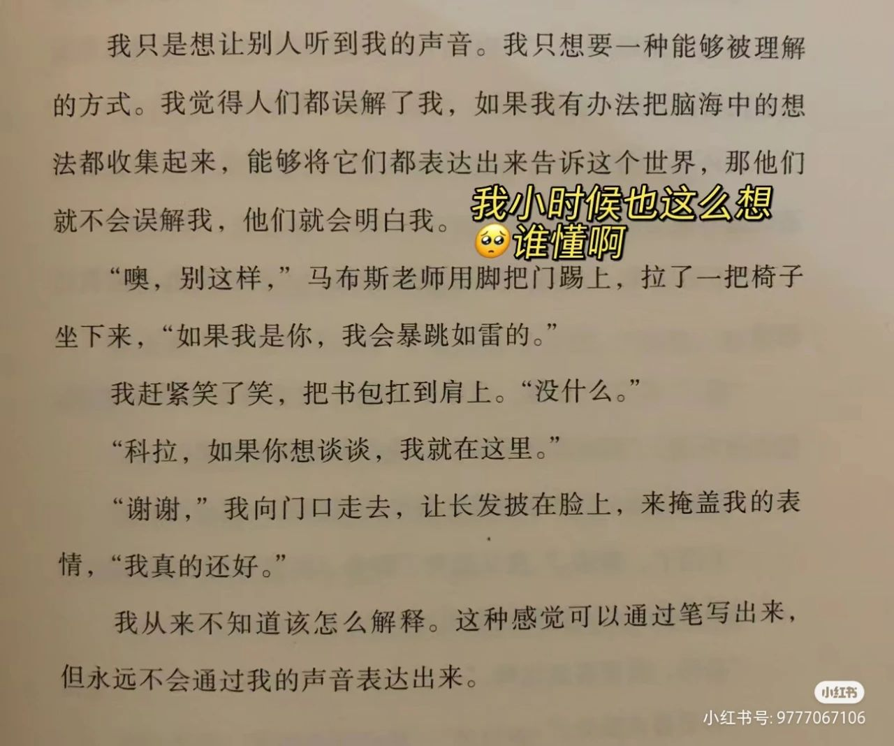
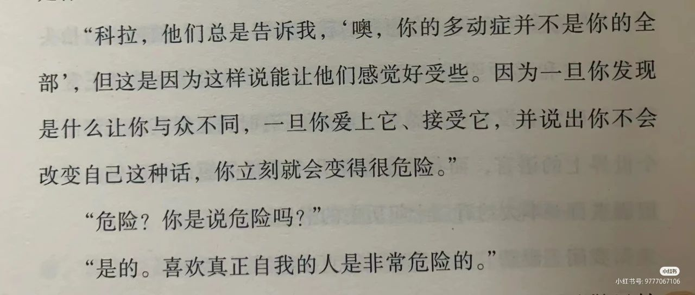
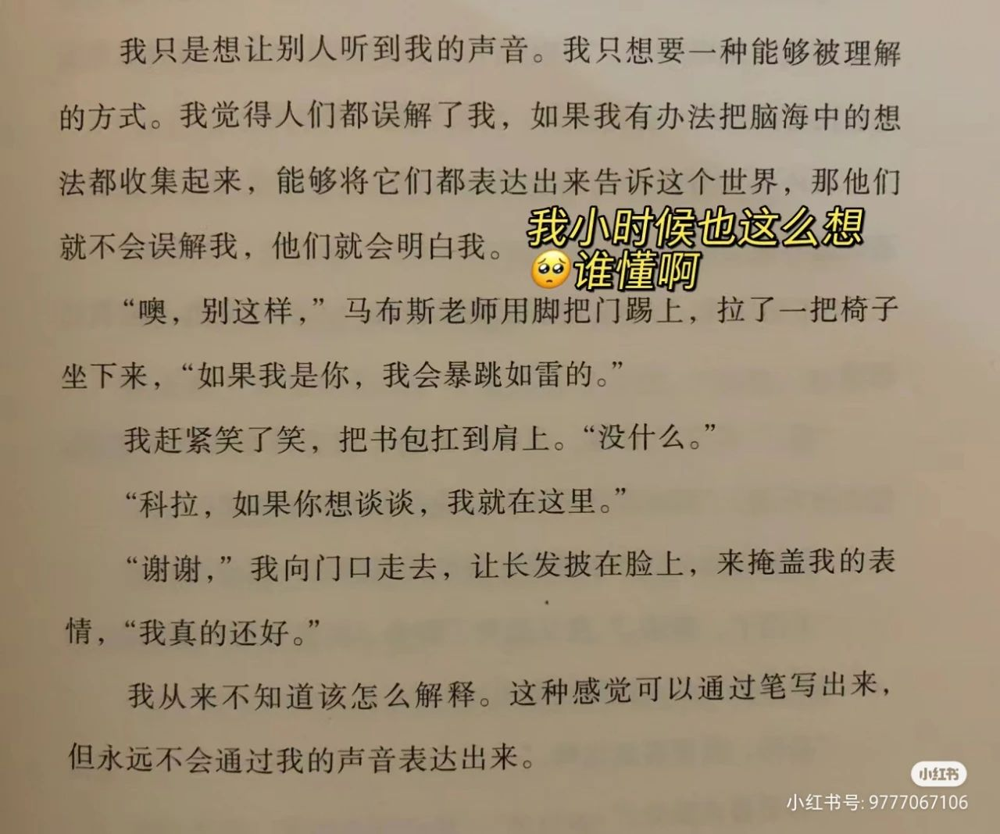
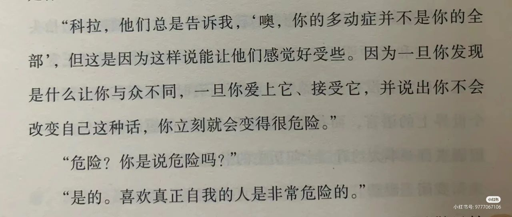
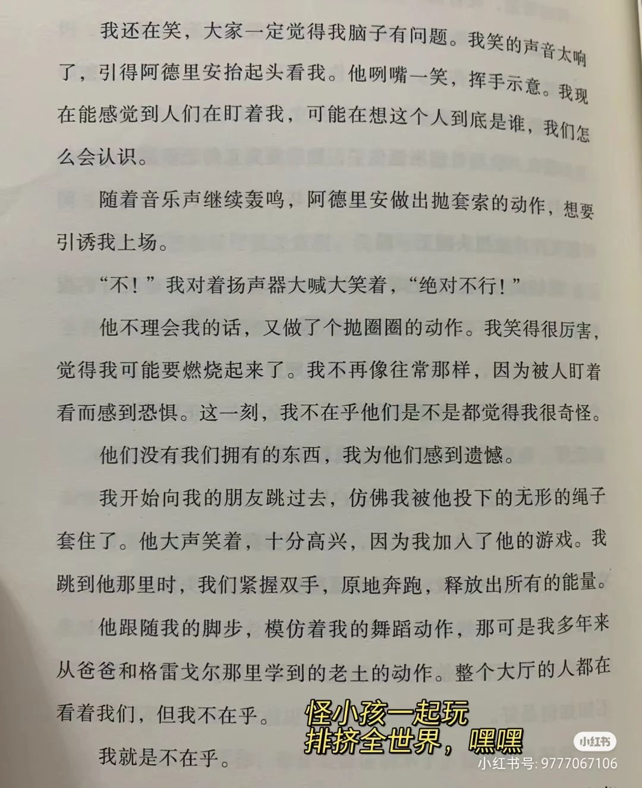
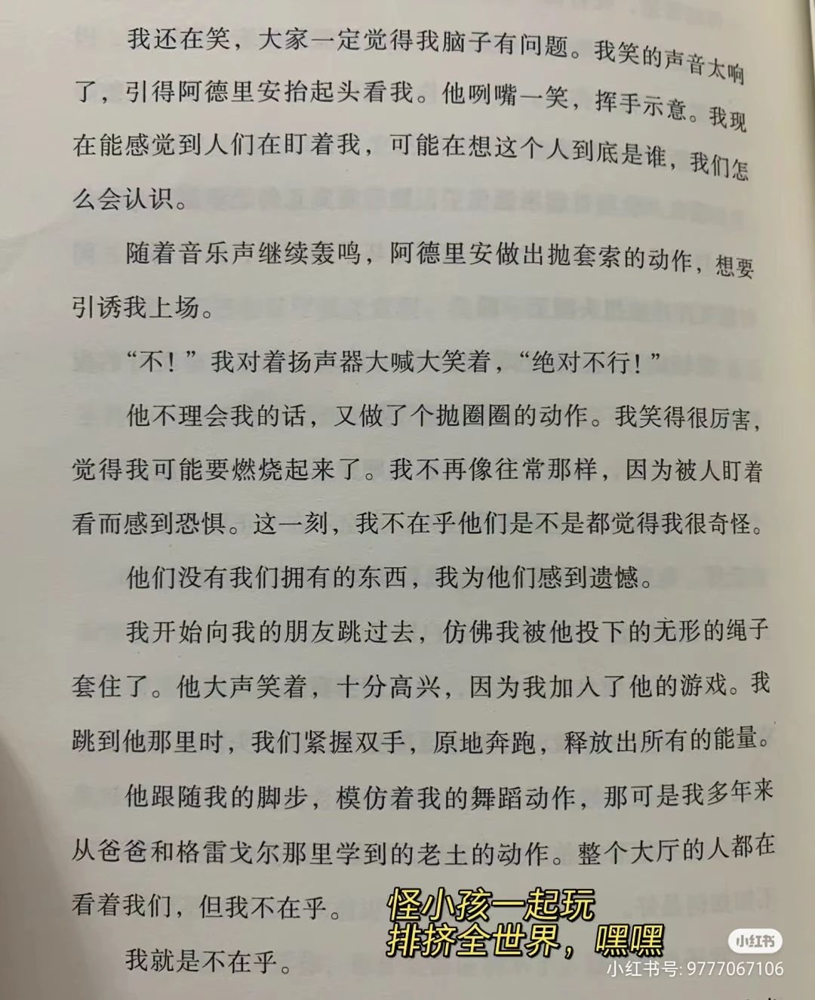
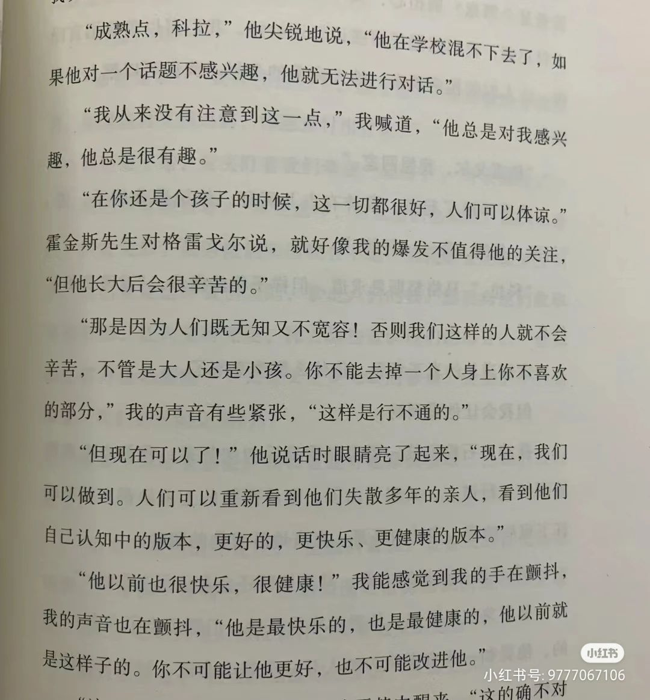
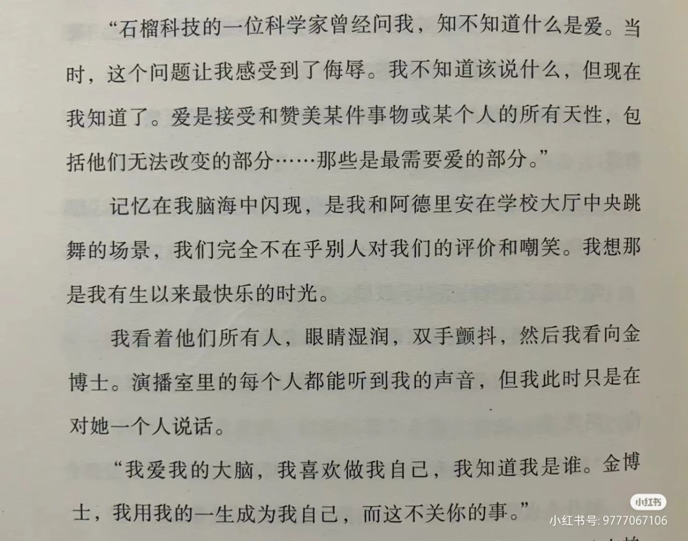
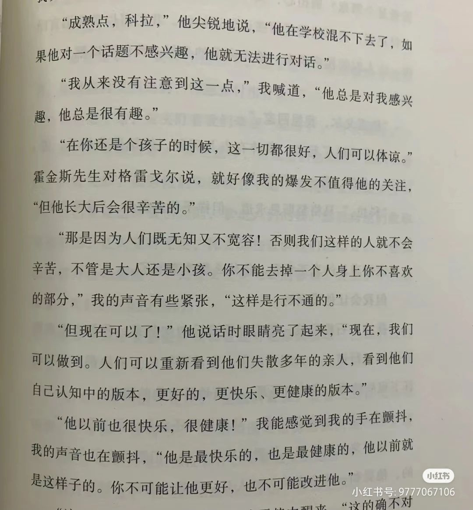
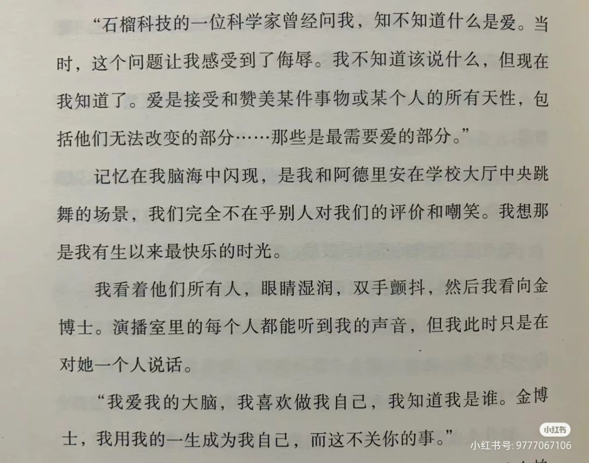

 
 

自闭症少女拯救世界：《科拉决定做自己》
在搜索框里打出自闭症三个字，自动联想的内容有病因是什么、能彻底治好吗、怎么干预、会遗传吗……
而这本小说向全世界回答：我不需要被治疗，我用一生成为我自己。
这是一本由两位神经多元女性作者创作的青少年小说，包含科幻元素，但重点在于主角的成长历程。 主角科拉是一位13岁的自闭症女孩，在学校里是孤独的边缘人，想要变得“正常”却屡次碰壁。她的新朋友阿德里安是一个有ADHD的富家男孩，他选择在家自 学，对于“正常”的标准不屑一顾。
在ta俩变成好朋友的过程中，科拉受到支持和鼓励，不再想要变得和别人一样，而是接受和喜爱自己的思考方式。
这本书没有把自闭症的“症状”集中倾倒出来、渲染主角有多悲惨，而是把它们自然地融入在生活各个细节中，让读者像玩第一人称游戏一样切身理解主角每天的体验。
“做自己”的主题其实很老生常谈了，但主角们遭遇的所有偏见，都是我曾经经历、现在也还在经历的…（有类似创伤的朋友可能需要做好中途被创的准备 但结局是很好的）
阿德里安的父亲是一家科技公司的老板，该公司正在 研发可以复制人类意识的全息投影技术，声称是为了 让人们可以和已故的亲人见面，并邀请女主作为受访 对象。
但是有着调查记者的敏锐的科拉发现，公司的真实目的其实是剔除真人大脑中那些“异常”的部分，制造出一个“完美”的虚拟形象，于是她决定阻止这个项目。
书中科学家的观点让我想起，历史上最早对自闭症进行研究的，也是一位为nazi优生学服务的科学家（详见《阿斯伯格的孩子》），直到今天这种「消灭一切不符合主流标准者」的思维仍在我们身边遍布，很多家 长寻求的都是“治愈”孩子、让孩子改变自己来融入 别人，而不是创建一个可以包容所有差异的社会。
这本书的结局像童话一样过于美好，但我觉得作者不妨进行更大胆的想象，比如阿德里安不一定要重返学校，女主做倡导工作也不一定要勉强去做公开演讲， 如果我们按照自己的方式做事也可以获得认可呢？
书评来源：QueerAsPunk
神经多样化 , 2